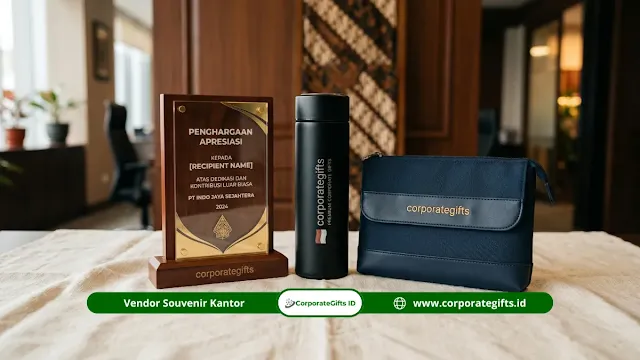

Corporate Gifts ID - Souvenir mitra kampus negeri adalah produk cinderamata representatif, seperti plakat penghargaan resmi, prasasti peresmian, atau merchandise fungsional branded yang diserahkan kepada instansi pemerintah, korporasi swasta, maupun organisasi mitra yang menjalin kerja sama resmi dengan perguruan tinggi negeri (PTN) melalui Nota Kesepahaman (MoU) atau Perjanjian Kerja Sama (MoA).
Cinderamata yang dipilih wajib mencerminkan wibawa kelembagaan, memenuhi standar etika protokoler akademik, serta memiliki nilai simbolis yang kokoh. Pemilihan jenis souvenir custom VIP yang tepat sangat menentukan kesan profesionalisme dan keberlanjutan relasi strategis jangka panjang antara universitas negeri dan mitra kerjanya.
Poin Kunci Souvenir Kemitraan Kampus Negeri:
- Kesesuaian Protokoler: Plakat kayu kuningan atau kristal 3D menjadi standar formal untuk penandatanganan MoU tingkat rektorat dan dekanat.
- Dual-Logo Branding: Penempatan logo PTN dan logo mitra instansi secara presisi dengan proporsi seimbang mencerminkan kesetaraan kemitraan.
- Kepatuhan Regulasi PTN: Wajib memenuhi standarisasi warna pantone resmi institusi dan proses administrasi faktur pajak legal.
- Nilai Guna Jangka Panjang: Pilihan merchandise fungsional berkualitas tinggi memastikan brand exposure aktif di meja kerja mitra.
Apa Itu Souvenir Mitra Kampus Negeri?
Souvenir mitra kampus negeri merupakan tanda kehormatan fisik yang dipersiapkan oleh biro hubungan masyarakat (Humas), bagian kerja sama, atau sekretariat pimpinan universitas untuk mengapresiasi kontribusi institusi eksternal.
Berbeda dari suvenir seminar umum, cinderamata kemitraan membawa bobot diplomasi institusional. Desain dan kualitas produk harus memancarkan kredibilitas akademik sekaligus rasa hormat kepada tamu kehormatan.
Kategori Souvenir yang Lazim Digunakan PTN
Secara umum, cinderamata kemitraan di lingkungan universitas negeri terbagi ke dalam tiga kelompok utama:
1. Produk Seremonial: Plakat dan Prasasti MoU
Plakat MoU adalah jenis cinderamata paling ikonik dalam seremoni kerja sama PTN. Produk ini diberikan saat penandatanganan dokumen perjanjian sebagai bukti fisik komitmen kedua belah pihak. Umumnya dibuat dari kombinasi akrilik tebal, kayu jati solid dengan plakat logam grafir, atau kristal optik berukir logo 3D di dalamnya.
2. Merchandise Branded dengan Dual-Logo
Produk fungsional yang menyematkan logo PTN dan logo institusi mitra secara berdampingan. Sangat tepat didistribusikan kepada tim kerja sama teknis, dewan pengawas, atau peserta program riset terpadu.
3. Cinderamata Eksklusif & Gift Set VIP
Paket hadiah terpadu yang memadukan buku agenda kulit, pulpen metal premium, dan tumbler stainless custom dalam kemasan rigid box mewah berlapis beludru.
Matriks Kategori Cinderamata Kelembagaan PTN
| Kategori Cinderamata | Karakteristik Produk Utama | Momen Protokoler PTN | Skala & Penerima Distribusi |
|---|---|---|---|
| Produk Seremonial | Plakat kayu kuningan, prasasti marmer, kristal optik 3D | Penandatanganan MoU/MoA, peresmian gedung riset | Pimpinan tertinggi (Rektor, Direktur Utama, Menteri) |
| Merchandise Dual-Logo | Tumbler vacuum SUS304, agenda hardcover, totebag kanvas | Kunjungan kerja resmi, benchmarking delegasi fakultas | Anggota delegasi, tim teknis kerja sama, peneliti |
| Executive Gift Set | Set pulpen rollerball metal + cardholder kulit + flashdisk kartu | Pisah sambut dekanat, apresiasi dewan penasihat kampus | Tamu kehormatan VIP, guru besar tamu internasional |
Pemilihan Jenis Souvenir Sesuai Konteks Protokoler
Agar cinderamata yang diberikan tepat sasaran dan selaras dengan etika kelembagaan, perhatikan konteks acara berikut:
Momen Penandatanganan MoU atau MoA Resmi
Untuk seremoni penandatanganan nota kesepahaman yang dihadiri jajaran rektorat dan direksi mitra, plakat seremonial berukuran proporsional (format A4 atau A5) dengan kotak beludru eksklusif adalah pilihan utama.
Kunjungan Kerja dan Delegasi Resmi
Untuk kunjungan kerja studi banding atau penerimaan delegasi antar-lembaga, merchandise fungsional seperti set tumbler dan buku catatan dual-logo memberikan nilai guna nyata yang langsung dapat dipakai tamu selama bertugas.

Penerapan standar warna pantone resmi dan penataan proporsional dual-logo pada souvenir kemitraan kampus negeri.
Program Kemitraan Berkelanjutan & Kolaborasi Riset
Pada program kemitraan skala luas yang melibatkan banyak mahasiswa magang atau staf riset, merchandise perusahaan fungsional dalam jumlah banyak memberikan efisiensi anggaran pengadaan terbaik.
Standar Kustomisasi dan Regulasi Pengadaan Institusional
Pengadaan suvenir untuk perguruan tinggi negeri menuntut ketelitian teknis yang tinggi demi menjaga akurasi identitas visual kampus:
| Tahapan Teknis | Prosedur Standar Kustomisasi | Jaminan Kualitas Protokoler |
|---|---|---|
| Spesifikasi Warna Pantone | Pencocokan kode warna resmi brand guideline kampus | Warna logo tidak pudar atau menyimpang pada media cetak |
| Mockup Visual 3D Approval | Pembuatan pratinjau digital sebelum proses produksi massal | Posisi dual-logo seimbang dan proporsional sesuai kaidah |
| Legalitas Faktur Pajak B2B | Penerbitan faktur pajak PPN resmi dan dokumen LPJ lengkap | Kepatuhan administrasi penuh terhadap regulasi belanja negara/PTN-BH |
Kesimpulan Praktis
Memilih souvenir mitra kampus negeri yang tepat adalah bentuk komitmen universitas dalam menjaga hubungan kerja sama yang saling menghormati dan profesional. Dengan memadukan plakat MoU seremonial untuk pimpinan tinggi serta merchandise dual-logo fungsional untuk delegasi kerja, citra positif perguruan tinggi negeri akan senantiasa terjaga secara prima.